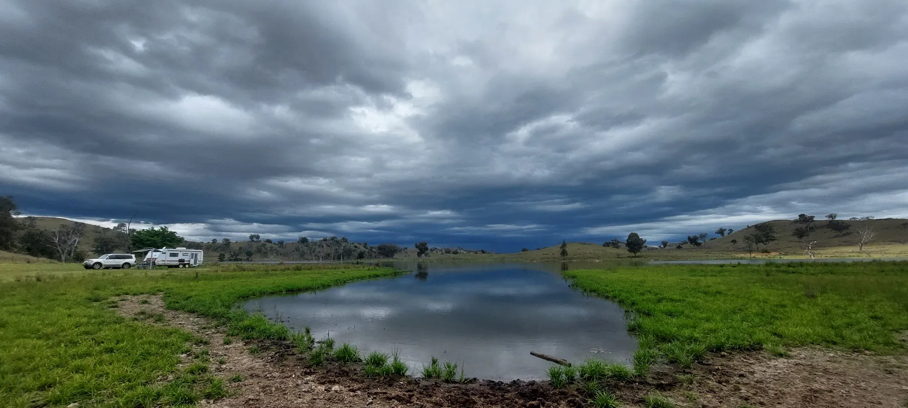
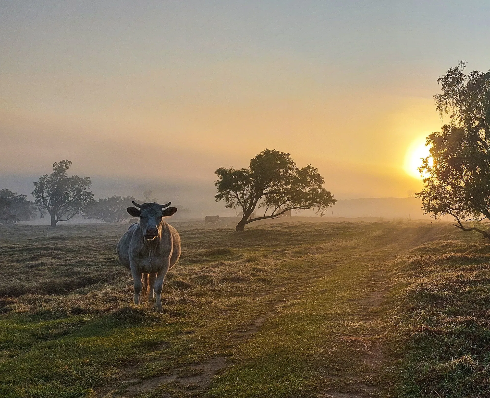
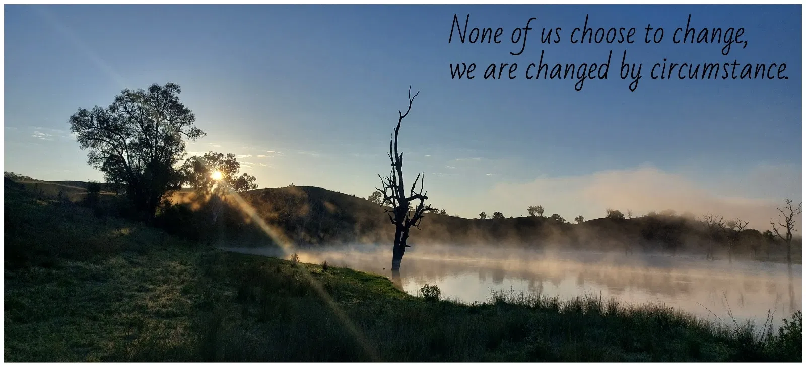

Writing, landscape photography, and endurance tracking.
In 1998, living out of a battered Kombi van in Cairns with ten thousand dollars under the seat and zero sailing experience, Vit spends eighty per cent of everything he owns on an impounded twenty-eight-foot yacht named Determined. A raw, funny Queensland coastal adventure weaving Nietzsche, Schopenhauer, Spinoza and modern neurobiology into wind, tide and circumstance.
Available on Amazon KindleExploring the natural world through light, texture and perspective. A visual record of remote landscapes, coastal environments and the quiet beauty of the Australian wilderness.

Blue-winged Kookaburra — Burdekin Region

Red-winged Parrot — Charters Towers

Tawny Frogmouth roosting — North QLD
Longitudinal cardiovascular tracking targeting Zone 2 aerobic base conditioning (500m run / 30s walk interval protocol).
| Training Block | Weekly Target | HR Zone Target | Resting HR | Morning HRV Baseline |
|---|---|---|---|---|
| Quarterly Baseline | 40 – 55 km | 110 – 130 bpm (Zone 2) | 49 – 53 bpm | ~58 – 62 ms |
| Half-Marathon Build | 50+ km / 400 min | Zone 2 / Recovery <110 bpm | 48 – 51 bpm | Optimal Readiness |